Dylan Kennedy.
DylanChemical engineering student using technical work to build systems that are better for the environment. My Pathway of Distinction is Professional Engagement.
"We can only see a short distance ahead, but we can see plenty there that needs to be done." - Alan Turing
I'm a Chemical Engineering student in the Honors College at the University of South Carolina, graduating with Leadership Distinction through the Professional Engagement pathway. I want to use my skills as an engineer to leave things better than I found them. Chemical engineering is one of the most direct levers we have on the problems I care about, from capturing carbon to cutting the water and waste that industrial processes take for granted. I came to Carolina wanting to work on those things rather than just study them.
What I've learned along the way is that good environmental intent is the easy part, but making it happen is the real work. The three Key Insights below reshaped how I approach engineering. I learned to see the resource cost hidden in ordinary things, discovered that the greenest fix and the cheapest fix are often the same fix, and realized that a good solution still has to be understood to matter. My Leadership section then takes an approved fix from my time at Enviva and lays out how I would expand it throughout the rest of the company. After graduation, I plan on returning to Enviva full-time to keep designing process changes that are better for the environment and getting the people around me to buy in.
Pulling all of this into one place is why I pursued Graduation with Leadership Distinction. It gave me a way to synthesize the passions I'd been pursuing separately across chemical engineering. That's also why the Professional Engagement pathway fit. It helped me put everything I'd already been doing into one clear direction.
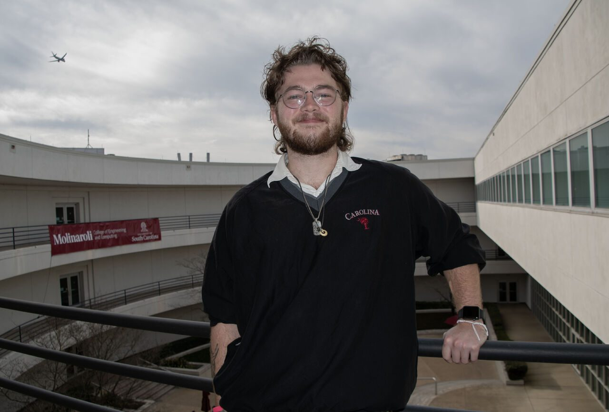
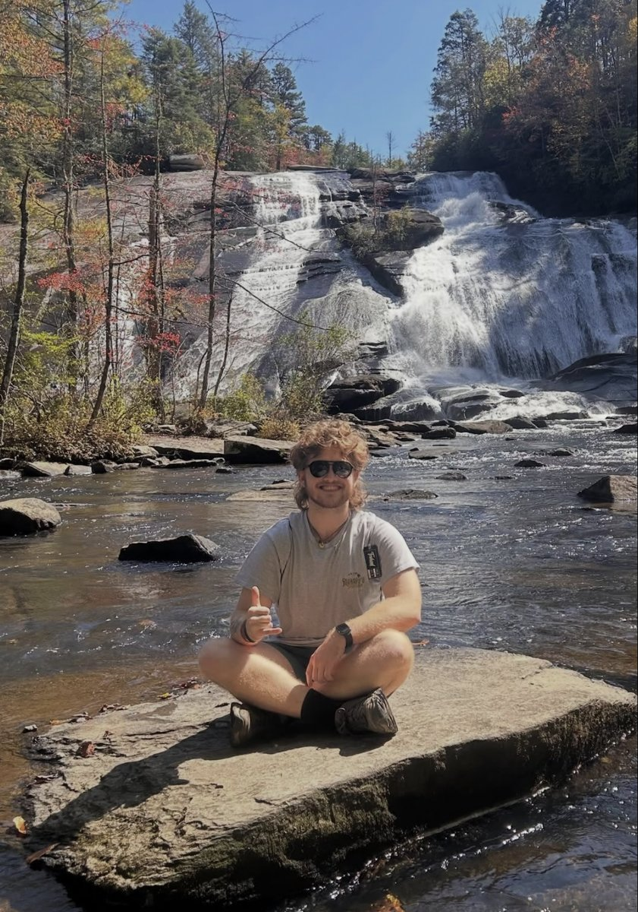
Mountaineering & Whitewater Rafting Club
A lot of what keeps me grounded in this work happens outdoors. We hike, climb, and get out on the water. Practicing Leave No Trace is an important skill this club has helped me develop, measuring how good a trip was partly by how little sign you left behind. That habit of minimizing your footprint on a place you care about is the same instinct that pulls me toward the environmental side of chemical engineering, just at a different scale.
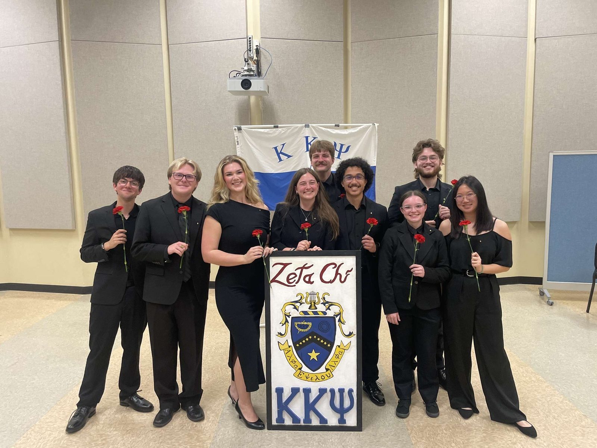
Kappa Kappa Psi
I'm an active brother in Kappa Kappa Psi, the national honorary band fraternity, where I've supported the university band program through service projects and mentoring new members. It's taught me a lot about how you really earn trust and influence as a leader, the kind that comes from showing up consistently and doing the tedious work.
Key Insights
Three moments where something I learned in a classroom and something I did in the real world shaped each other. Together, they cover what it actually takes to make an environmental fix happen, from seeing the waste, to engineering it to pay for itself, to getting people to adopt it.
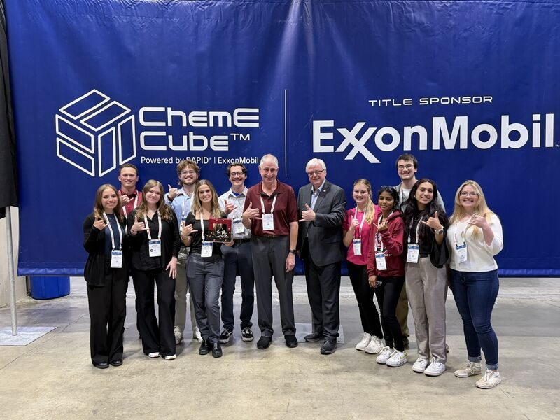
Our Vitamin Cube team after the last run at the AIChE Annual Student Conference ChemE Cube competition. This is the carbon-capture project that placed 2nd internationally for the business pitch.
A good environmental solution is only as strong as your ability to make the right person care about it. That was the idea I ran into in SPCH 140, through a formal concept called the rhetorical situation, developed by Lloyd Bitzer. It states that no act of persuasion exists in a vacuum but that every message is shaped by the audience being addressed, the problem making it necessary, and the constraints on what can effectively be said. A persuasive case is one deliberately engineered to fit those three, not one that just states what is true. This is not the soft skill of "being a good communicator." It is a structured method for analyzing a situation before building the argument. Before that class, I thought persuasion was mostly a matter of having enough facts. The framework reframed it as something you design, and it made the stakes concrete. If you put an idea in a form that does not fit the people in front of you, it does not matter how correct it is.
My within-the-classroom experience was where I first practiced this. For a persuasive speech assignment, I argued that vaping is more harmful than it seems. Vaping is typically marketed as a safer alternative to smoking when it might be worse. Instead of leading with health statistics, I built the whole case around my specific audience of college students my own age, framing it around what that audience cares about instead of long-term risks that feel distant at our age. It was the first time I treated persuasion as a design problem by considering who is listening, what they already believe, and what can change their mind, then working the argument backward from there. As shown in my persuasive speech slides, the structure follows the audience, not the topic. The room responded well and the speech earned an A, but the more lasting result was building a habit of starting from the audience, not the information.
I relied upon that habit at the AIChE Annual Student Conference, where I represented two environmental projects to two opposite audiences over the course of one week. On the Vitamin Cube team, I helped develop a material made from mandarin peels that pulls carbon dioxide straight out of the air. It captured about 6% of its own weight in CO2, and I pitched it to a panel of judges playing the role of investors. For the ChemE Car project, we had reverse-engineered how a hydrogen fuel cell could power a car motor, and I presented that design to a panel of practicing engineers. Similar science both times, but I ran the rhetorical situation on each room. The investor panel cared if the idea could scale and pay for itself, so I led with market size, cost per ton, and the revenue case. The engineer panel cared whether the design was sound, so I led with the mechanism and the numbers behind it. As the Vitamin Cube pitch deck shows, that project is framed entirely around the investor's questions, the market, the cost, and the ask. Framing the pitch deck around this instead of the chemistry carried it to 2nd place internationally.
Connecting the two, persuasion is not separate from the engineering. It decides whether the engineering ever gets used. A carbon-capture additive and a hydrogen-powered motor are only as good as someone's willingness to fund or trust them, and that willingness depends on how you frame the work for the person in front of you. The most useful part of this for my future field is that the climate problems I want to work on are full of technically sound ideas that never get adopted. This is often because engineers are trained to prove things are correct rather than to make the right people care about them.
This changed how I see my own role. I used to treat communication as something you do after the real work is finished. Now, I treat it as part of the engineering, and I want to be as strong at that as at the technical side of things. In practice, I work the audience in from the start. Before I present a design or a proposal, I ask who has to say yes and what they care about, then shape the case around that instead of leading with the derivation. That is the heart of my Professional Engagement pathway, which for me comes down to keeping good engineering from dying on the page. A solution nobody adopts does not reduce any emissions, and I want to spend my career making sure the good ideas are the ones that get used.
Artifacts
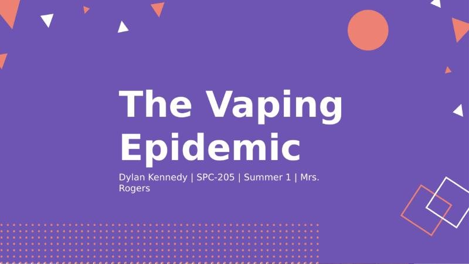
Open PDFPersuasive speech slides, SPCH 140. I took this course as SPC 205 at Trident Technical College, and it transferred to USC as SPCH 140. The presentation deck from an early persuasive speech, built to move a specific audience toward a position rather than just inform them. It is where I first practiced audience analysis as a deliberate design step, the same skill I later leaned on to pitch two very different technical projects in one week.
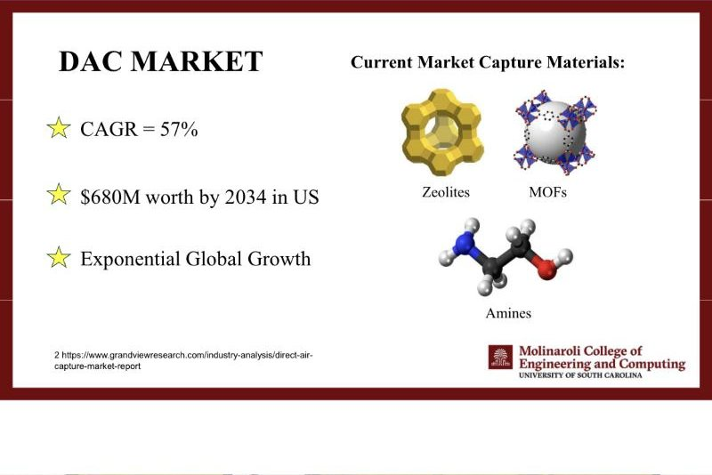
Open PDFVitamin Cube investor pitch deck. The deck my team used at the AIChE Annual Student Conference to pitch the additive and its business case. It is audience analysis under pressure, framing the same carbon-capture science around market size, cost per ton, revenue streams, and the investment ask. That framing carried the project to 2nd place internationally.
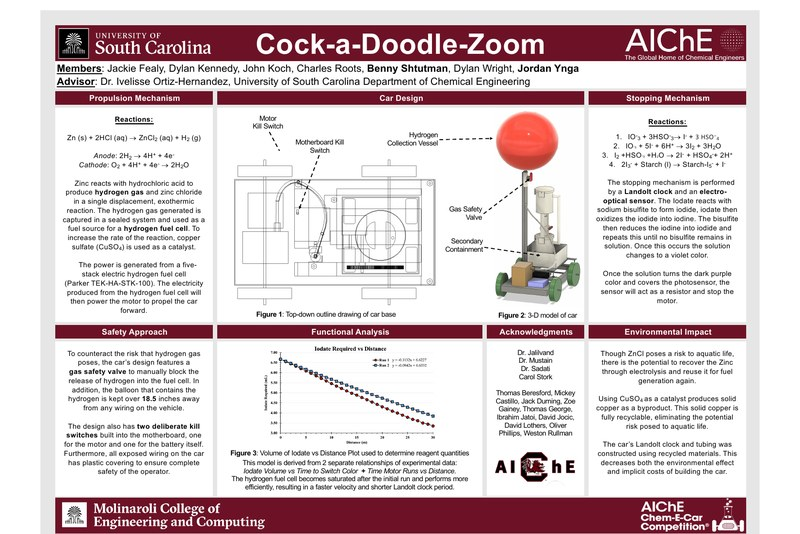
Open PDFChemE Car design poster, AIChE Annual Student Conference. The poster my team built to explain how a hydrogen fuel cell could power the car's motor. Where the Vitamin Cube deck leads with the market and the ask, this one leads with the mechanism, the safety features, and the numbers behind them, because it was written for a panel of practicing engineers. Side by side, the two show the same audience analysis producing two very different documents.
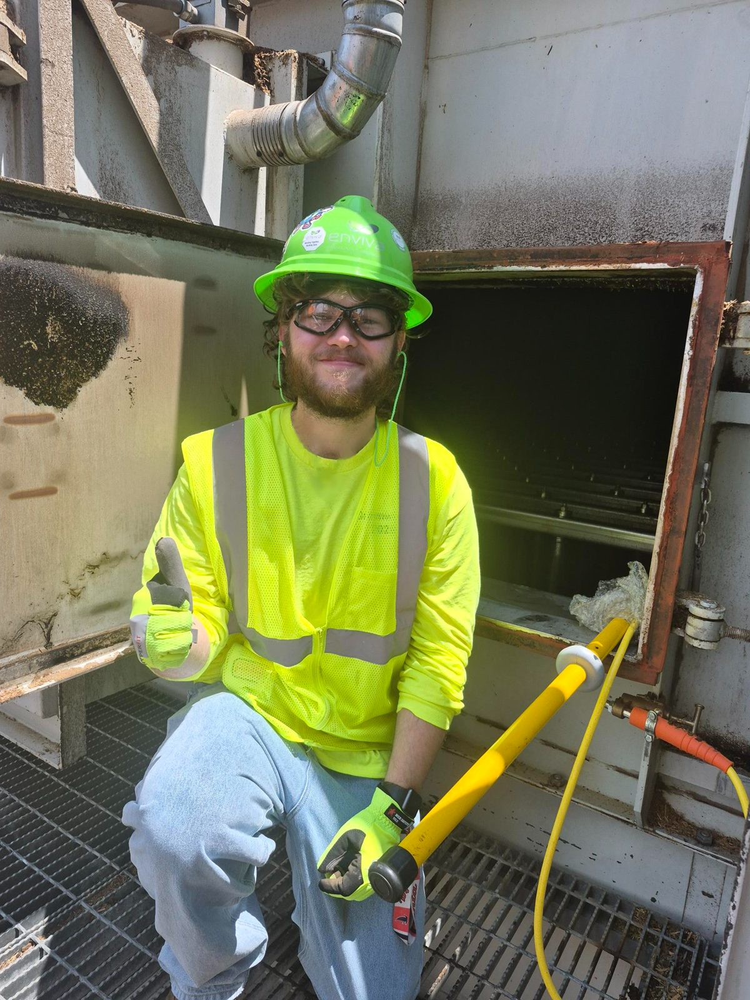
On site at the WESP unit at Enviva Biomass's Greenwood facility, where I worked on cutting the water, labor, and downtime that cleaning this equipment burns through.
ECHE 573 is a graduate-level chemical engineering course about the shift away from fossil fuels. The premise is that new energy technologies need to pass more than just a technical test, but must hold up economically and socially as well. The tool the course kept returning to is techno-economic analysis, evaluating an option by its engineering performance and its cost at the same time instead of proving something works and worrying about the money later. A lot of the class was team based, and running that analysis on real technologies drove home something I did not expect. A technically impressive idea and a financially worthwhile one are not the same thing, but the second is typically what gets built.
Our team project made that concrete. I was the group lead and ran the cost-savings analysis for a proposed system that generates electricity from rainfall. On paper, "electricity from rain" is a great idea, but when I ran the numbers, the rain side of the system saved about $0.04 a year while the solar side of the same hybrid panel saved about $17,000 a year. The appealing part of the idea was almost worthless, and the analysis is what showed us where the real value was. That was my first real practice with pairing an environmental idea with its cost and letting the numbers decide what is worth doing instead of the theory.
At my Enviva Biomass internship, I ran into the more powerful version of that idea. Sometimes, the green fix and the cheap fix are not a trade-off, but rather the same fix. I worked on a wet electrostatic precipitator, or WESP, which uses an electric charge to pull fine particles out of the plant's exhaust so cleaner air goes up the stack. Over time, buildup forms on the electrodes inside it and has to be cleaned off. Cleaning burns through thousands of gallons of water, and since the plant could not do it in-house, it meant paying an outside crew for the labor every time plus the downtime losses while the unit sat offline. I traced why the buildup was forming using root-cause analysis, working backward from the symptom to its source rather than just treating it. I also read the plant's piping and instrumentation diagrams, which is the map of how the equipment and flows connect, as well as its live operating data. The key realization was that the water the cleaning wasted and the money it cost were the same line item, and a change to how the unit is cleaned would cut both at once.
The second half of that experience was presenting the change at Enviva's headquarters in Raleigh to a room of executives and engineering leadership. I led with the money, because the people deciding were the ones who answer for the budget, and then showed that the water savings came from the same change. That was the audience-first habit from my first insight, put to use in a real decision. Leading with the cost got the change taken seriously, and showing that the water and the money were the same line item meant nobody had to weigh a green option against a cheap one. The change was approved. On the plant floor, cost and waste had looked like one problem, and in that room they turned out to be one argument too.
That reframed what sustainability means in my field. The environmental case and the financial case were not two arguments I had to reconcile, but one number seen from two sides. The change is projected to save the plant a six-figure amount a year, and it does that by not wasting the water, chemicals, labor, and uptime the old method threw away. This is a different lesson than the one in my first insight. That one is about how you communicate a fix to the people who decide on it, while this one is about the fix itself and hunting for the specific interventions where cutting waste and cutting cost are the same move. The most useful part of this for my future field is that the environmental work I want to do lives inside organizations that run on cost, so the best fixes are the ones where I do not have to choose between green and cheap. Going forward, that is the kind of engineer I want to be, someone who can carry a project from a root-cause analysis to a documented, funded solution a plant keeps running long after the intern who scoped it has gone. That is the core of my Professional Engagement pathway, and scaling that kind of fix is the work I want to spend my career on.
Artifacts
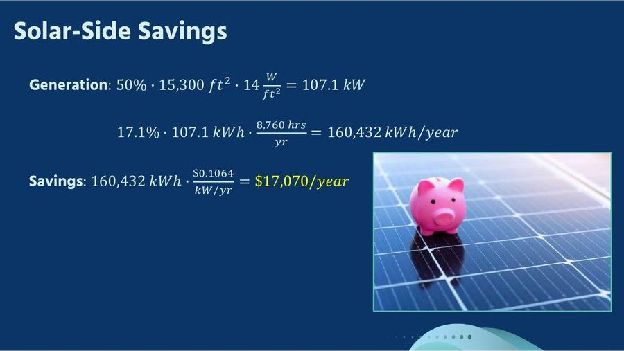
Open PDFThe Benefits of Generating Electricity from Rain, ECHE 573 team project. I was the group lead on this project and personally ran the cost-savings analysis. The slide deck evaluates generating electricity from rainfall on cost-effectiveness, working through the solar, rain, and water savings, as well as the return on investment. It is where I first paired an environmental idea with its economics and let the numbers rank the options, the same habit I relied on at Enviva.
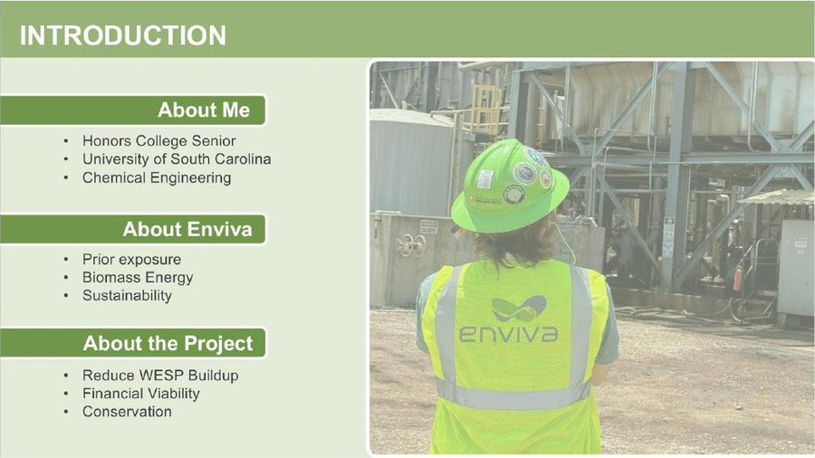
Open PDFTwo-Phase WESP Flush Chemistry Optimization, Enviva Biomass (redacted). The presentation I gave at Enviva's headquarters on cutting the water, labor, and downtime that cleaning the WESP burned through. It shows the full scope, from problem evaluation and root-cause analysis through the design, documentation, and the financial case where the environmental win and the cost win turned out to be the same result. Proprietary figures, drawings, and site details are redacted at the company's request.
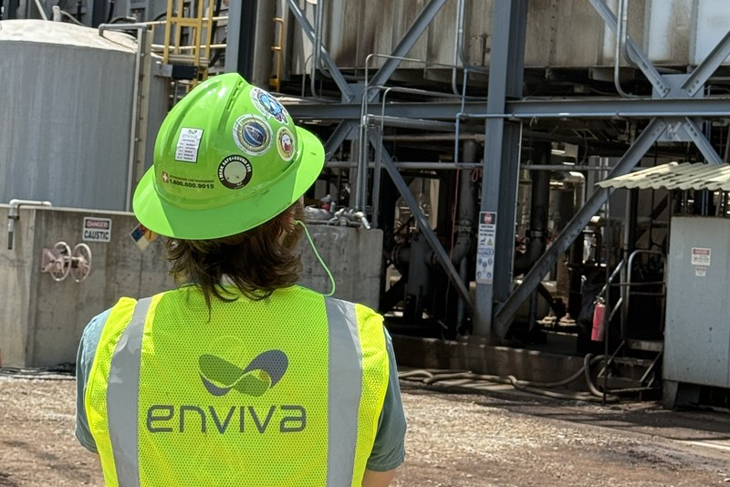
Open postEnviva Intern Spotlight, Enviva on LinkedIn. Enviva featured me in its Intern Spotlight series, and the photo is from the same summer at the Greenwood WESP. In the post, I described how classroom problems are set up to have one expected solution, while real-world solutions take many forms because of constraints that are not obvious at first. That is the same lesson this insight is about. ECHE 573 taught me to weigh cost and performance together, and the plant taught me to go looking for the hidden constraints, like the water and labor tied up in a routine cleaning, that decide which fix is actually worth making.
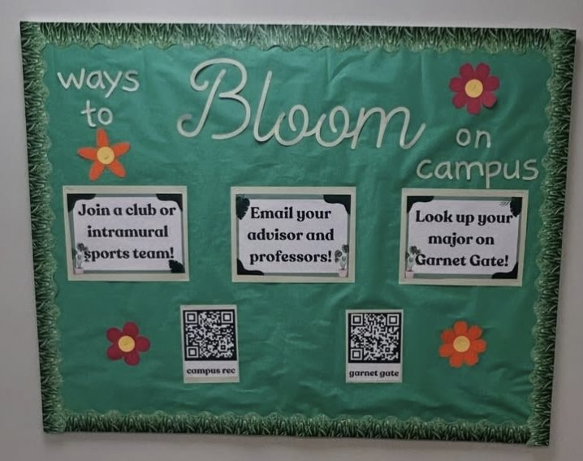
A campus-resources board I made for my 28 residents. The RA role is about looking after the place people share, and that is the habit that got me noticing the small, constant waste that is easy to walk past.
ENVR 321 introduced me to the concept of the ecological footprint. It is a way of measuring how much land and water it takes to support the way one person lives. You add up the main parts of a lifestyle like travel habits, what you eat, your housing and energy use, and the goods you buy. The calculation converts all of it into the amount of productive land and water your habits require, including the land it would take to absorb the carbon you produce. The result is usually expressed as how many Earths we would need if everyone lived the way you do. Anyone can calculate their own at the Global Footprint Network's calculator.
Going in, I assumed I was already doing fine. I live on campus, so I barely drive. I also eat a fairly healthy diet, so I figured my impact was small. The numbers proved me wrong. If everyone lived the way I do, we would need about 6.5 Earths, and what surprised me most was where it came from. My diet, where most of my protein came from beef, turned out to carry more emissions than roughly four times my yearly driving. Eating well in a healthy sense, I learned, is not the same as eating well in an environmental sense, and I had never separated the two before. Part of why I assumed I was fine is that most of the environmental messaging I have seen focuses on personal choices like driving and flying. Since I did not drive much, I felt like I had my bases covered, but the bigger cost was sitting somewhere I never thought to check.
That is the lens I brought into my job as a Resident Assistant, where I oversee 28 residents in a building of 450. Before that class, I probably would have logged a maintenance issue as a chore and moved on. Now, I can notice the resource behind it. When I found a toilet running continuously, I did not just report that something was broken. I knew a toilet left running can waste hundreds of gallons of water a day, so I wrote up the exact fault and location so it would not get brushed aside and consistently pushed it to maintenance until it was fixed three days later. It was a small thing to catch, but I only caught it because that class had trained me to look.
I see the same thing outside of work. With the Mountaineering and Whitewater Rafting Club, we hiked Looking Glass Rock and ate lunch at the top, and we were meticulous about making sure not a single plastic wrapper got left behind. Leave No Trace treats every trip as having a footprint, and a wrapper dropped on a summit is waste that stays long after the group that left it. After ENVR 321, I see that habit as the trail version of the footprint calculation. It is a small cost that only adds up when nobody takes responsibility for it.
Together, what stays with me is that the waste worth catching is usually the waste nobody is looking at. The footprint assignment showed me that about my own life, the running toilet showed me the same thing in a building I look after, and the trail showed me it in a place nobody owns. None of them were hard to fix, but no one had thought to look.
That shapes the kind of engineer I'm trying to become. My second insight is about the big version of environmental change, where you build a financial and technical case strong enough that a whole plant will fund it. That matters, but I will not always be able to convince a company to overhaul how it operates, and it is not the part I have the most control over anyway. The part I do control is smaller. When I am the one making design decisions, I want cutting waste to be something I build in, not something I have to win an argument for first. That means looking closely at the materials and inputs a design depends on and choosing the more responsible option when the choice is mine to make, even when no one is asking and no one would notice if I did not. Those choices are easy to overlook, but that is what my Professional Engagement pathway comes down to for me. I want to use what I know to look out for the people who live with what I build, starting with the decisions that are already in my hands.
Artifacts
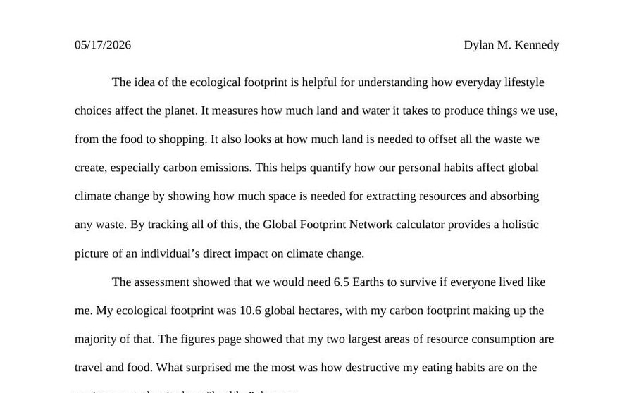
Open PDFEcological Footprint assessment, ENVR 321. My personal footprint analysis for the course, using the Global Footprint Network and related calculators to turn my everyday habits into concrete figures for land, water, and carbon usage. It is where I learned to see the hidden resource cost inside ordinary choices, the same habit I now apply to the building I look after.
Residence hall maintenance report (redacted). A work order I filed as a Resident Assistant. It documents me catching a continuously running toilet, pinning down the exact fault and location, and driving it to a resolved fix within three days. It is small in scale, but it is concrete evidence of the skill this insight is about, which is recognizing a hidden resource cost, quantifying it, and acting on it. Names, contact information, and the room number are redacted for the privacy of residents and staff.
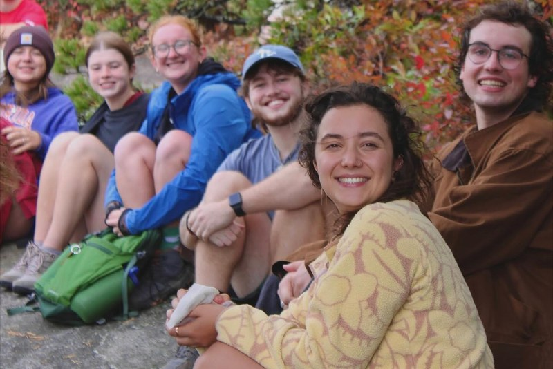
Open postLeave No Trace on Looking Glass Rock, Mountaineering and Whitewater Rafting Club. Our group at the summit of Looking Glass Rock, where we stopped for lunch and made sure every wrapper came back down with us. It is the beyond-the-classroom version of the footprint assignment, the same habit of noticing small, easy-to-ignore waste, applied to a shared place nobody owns.
Leadership Plan
I already found one environmental fix and got it approved. Here is how I plan to take it past the single plant where it lives now, since a solution that only runs in one place isn't finished yet.
The Issue
Industrial plants are quiet, heavy consumers of water. U.S. self-supplied industrial facilities use about 14.8 billion gallons a day, and the EPA lists cleaning equipment as one of the most common things that water goes to (USGS, 2015, and EPA). A large share of that cleaning is something plants have accepted as a fixed maintenance cost. On the rare occasion a facility finds a way to cut it, the fix tends to stay trapped at the one site that discovered it instead of spreading to comparable sites. That gap between a proven efficiency fix and its actual adoption across the plants that could use it is the problem I want to take on.
I have a concrete version of it in front of me. At Enviva, where I interned and where I intend to return full-time after graduation, I scoped a change to how the wet electrostatic precipitator (WESP) is cleaned, one that cuts the water, labor, and downtime that maintenance burns through and is projected to save the facility a six-figure amount a year. But the savings are the lever, not the point. What the change really does is keep a large, recurring volume of water out of a maintenance process that was throwing it away, water drawn from the same regional supplies the surrounding community depends on. Enviva operates several other facilities, on other water supplies, with comparable WESP systems where the change has not been evaluated or adopted. Getting one approved fix into more of those plants means that much more water conserved in that many more communities. This is a concrete, first-step piece of industrial water stewardship, and directly tied to my Professional Engagement pathway by putting a piece of technical work to use in a way that serves the people and places downstream of it.
Recommendations / Solutions
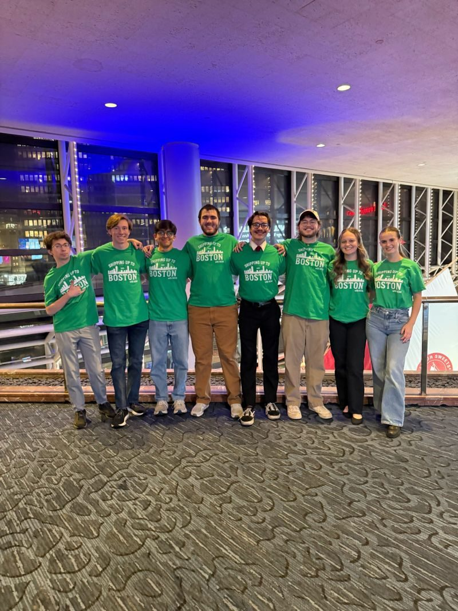
The AIChE executive team I helped lead as Vice President. The sponsorship and fundraising we did is what funds the competition teams behind Insight #1.
My plan is to formally document the WESP change as a standardized, transferable process and build the case to pilot it at a second Enviva plant. In practice, documenting it means turning what I did once into a package another plant's engineer could follow. That package is a written standard operating procedure for the change, including the process-flow P&ID and the cost-and-water model behind the savings. That leans directly on Insight #2 and the techno-economic analysis I first learned in ECHE 573. A fix doesn't get adopted because it's technically sound. It gets adopted when the engineering and the cost are proven together on the same page, the same pairing that got it approved the first time. It also leans on Insight #1 and the rhetorical situation from SPCH 140, because the people I need to convince don't all care about the same things. Operations will want downtime and labor. Sustainability leadership will want water and emissions numbers. It's the same fix framed two ways, the exact skill I practiced pitching Vitamin Cube to investors and the ChemE Car to engineers in one week. What makes me the right person to carry it is straightforward. I'm the one who scoped, cost-analyzed, and documented the original fix, so I already hold the data and the design the whole case has to be built on.
I'll also lean on what I learned as Vice President of AIChE, where I brought in over $5,000 in funding and sponsorships for our competition teams. That role taught me what it actually takes to get an organization to say yes to a resource request. You build relationships with the people who hold the budget, and you show up with a clear, credible ask instead of just a good idea. Getting a second plant to try the WESP fix is the same kind of ask, just with more at stake.
Detailed Plan
I'd run this over roughly a 12-to-18-month window as a returning full-time engineer, and it reaches three sets of stakeholders. The people impacted are the operators who do the cleaning today and lose uptime to it, plus the watershed and community around each plant that the saved water stays in. The people invested are Enviva's sustainability leadership, who gain reportable water and emissions reductions, and the chemistry vendor already involved in the original fix. The decision-makers are the plant managers and the capital-approval leadership whose budget a pilot needs. Where I can, I'd choose a second facility with water chemistry and climate close to Greenwood's, since some of the savings depend on those conditions.
| Step | How | Why |
|---|---|---|
| 1. Formalize the documentation (months 1 to 3) |
I would write this up myself, since I already hold the data. It would take the form of a standard operating procedure plus supporting drawings, including the P&ID review (a check of the piping and instrumentation diagram, the schematic that maps how the equipment and flows connect) and the chemistry and cost/water-savings figures I already gathered. | A one-off internship success has to become a repeatable, transferable process before anyone else can adopt it. |
| 2. Identify a pilot facility (months 3 to 4) |
Work with my Enviva supervisor to identify a second plant with a comparable WESP configuration. | The fix needs to be validated somewhere other than the original site before it can be trusted as a general solution. |
| 3. Build two versions of the pitch (months 4 to 6) |
I would build the case, a short proposal plus a presentation, in two versions from the same data. One would be operations-focused (labor, downtime, safety) and the other sustainability-focused (water use, emissions). I would also bring in Greenwood's leadership to speak to how the change has actually performed for them. | Different stakeholders approve budget for different reasons, which is Insight #1 in practice. |
| 4. Secure pilot funding (months 6 to 9) |
I would present the case to the second plant's leadership myself, using the stakeholder-relationship and ask-framing skills I built securing AIChE sponsorships, and bringing in Greenwood's engineers and the chemistry vendor as credible backers rather than relying on cold outreach. | Even an approved fix needs someone to approve the budget and time to test it elsewhere. |
| 5. Implement and monitor (months 9 to 15) |
I would work with the second plant's engineers to implement the process change, then track the results over a defined period of 3 to 6 months. I would pull cleaning frequency from the plant's maintenance logs, chemical cost from purchasing records, and water use from the unit's flow metering. | Comparable, measured results are what would justify a company-wide rollout. |
Evaluation
Success would be the second plant hitting a real share of the original site's savings. I'd set the bar at 70% of the original cost and water reduction to start, since things like water chemistry, equipment age, and throughput vary plant to plant and some drop-off is honest to expect. I'd lean on the pilot plant's own engineers and operators to flag anything that doesn't transfer cleanly, and I'd track the same numbers that made the first case land, all of which already live in the plant's own systems. That means cleaning frequency from the maintenance logs, chemical cost from purchasing records, and water use from the unit's flow metering. Measuring the reduction is then a matter of comparing the pilot's before-and-after against Greenwood's baseline, with the plant's operations team owning the data. If the pilot lands well below that bar, I would treat it as data rather than a dead end. I would compare the pilot plant's water chemistry and operating conditions against Greenwood's to find what did not transfer, then adjust the procedure before trying a third site. What I really want to learn is whether this fix generalizes across Enviva's plants, and past that, how you take one engineering win and turn it into something a whole company does by default. That last skill, scaling a good idea into a standard, is the one I think matters most for moving the needle on sustainability, and it's the one I most want to keep practicing.
Selected Projects
A few things I've built and worked on. Most of them come back to the same idea of using engineering to cut waste, capture carbon, or get more out of less.
WESP Cleaning Optimization
Scoped a change to how a wet electrostatic precipitator (WESP) is cleaned at a biomass plant, cutting the water, labor, and downtime the old maintenance method burned through and projected to save the facility a six-figure amount annually. Built on P&ID review, real-time plant data, and root-cause analysis.
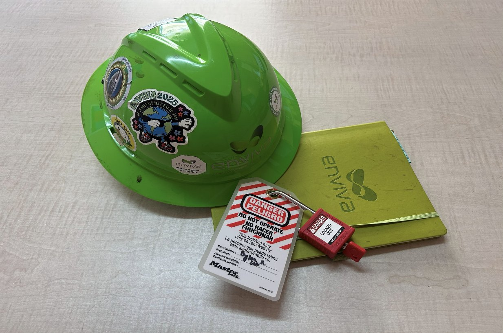
Open PDFVitamin Cube, Solid Direct Air Capture
Researched a novel solid direct-air-capture additive, pyrolyzed mandarin peels treated with KOH, that captured 6 wt.% CO2, then pitched the process and business case to a panel of investor-judges at the AIChE Annual Student Conference. Placed 2nd internationally.
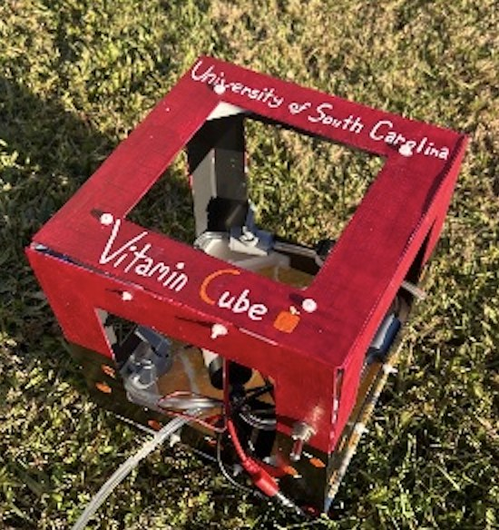
Open PDFChemE Car Competition
Reverse engineered how a hydrogen fuel cell could power a car motor, then presented the design to a panel of practicing engineers the same week I pitched the Vitamin Cube carbon-capture project to investors. Two clean-energy ideas, two very different rooms.
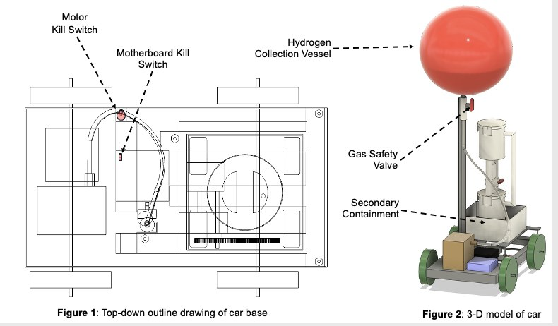
Open PDFPassive Finned Heatsink Design
Led a three-person team modeling a passive copper heatsink to cool a 350 W server-class microchip with no fans or liquid, just natural convection through a 24-fin array. A parametric study on fin count, spacing, and height converged on a 95 × 70.5 × 85.3 mm design that dissipated 352.7 W, meeting the target with a deliberately thin 2.7 W margin.
 Open PDF
Open PDF
Let's Talk
Full-time roles
Mentorship conversations
Collaboration
Response time
Within 48 hours